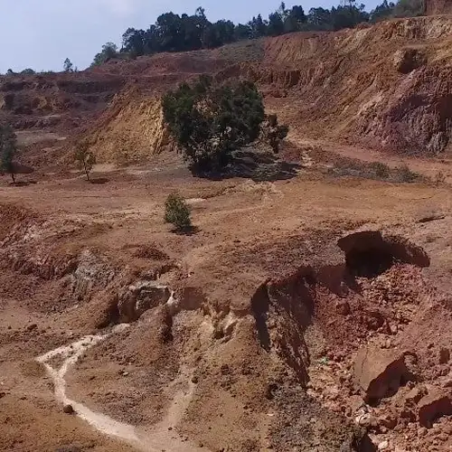
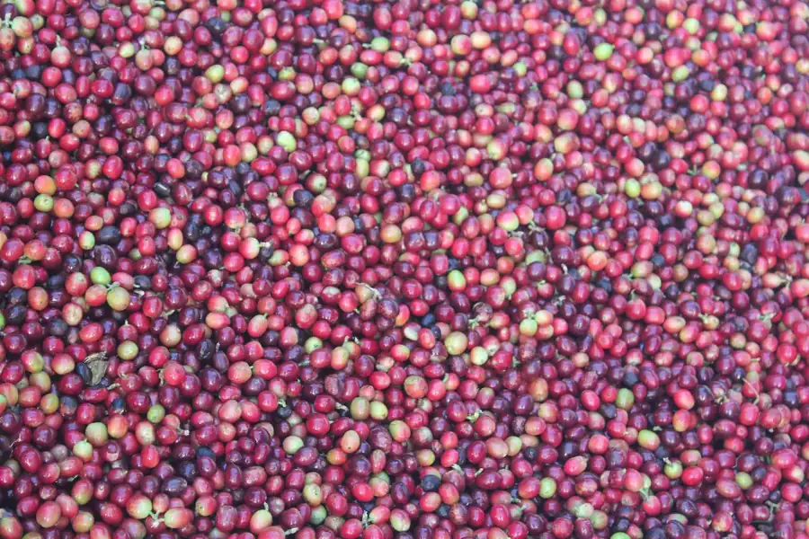
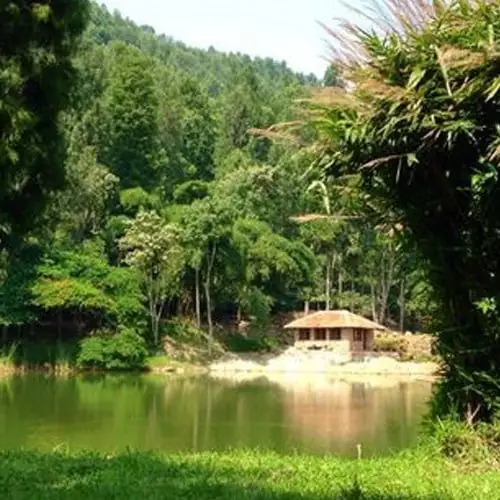
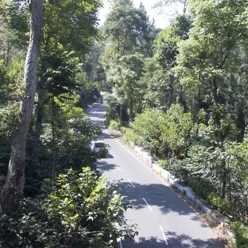

Bauxite soil & mountain springs

Shevaroys
Estate Reserve
1,450m
- AcidityCrisp
- BodyMedium
- AftertasteCitrus
Fine aroma, crisp acidic flavour, finishing on distinct citrus. The highest of the three.

The coffee
Three estates at three elevations in the Shevaroy Hills, and two blends drawn from all of them. Every bag grown, processed and roasted on our own ground.

Bauxite soil & mountain springs
Fine aroma, crisp acidic flavour, finishing on distinct citrus. The highest of the three.

A well balanced cup

Hawaiian Red Caturra, from seed brought back from Costa Rica in 1965.

Cultivated in spice-rich plantation

Interplanted with clove and nutmeg, and the cup carries it. Mild aroma, spiced finish.
And two blends made from them
Both are drawn from all three estates — blended for a job rather than a place, and packed in white rather than kraft.

Blend of all three single estates. Good acidity and good flavour, medium body, medium decoction.

Blend of all three single estates. Good body and a good strong decoction, with medium acidity.
How to choose
Higher and cooler means slower ripening, brighter acidity and a lighter body — that is Shevaroys at 1,450 m. Lower and warmer means a rounder, fuller cup — that is Glenfell at 1,250 m, with clove and nutmeg growing between the rows. Cauvery Peak sits in the middle and is the one to start with.
Where it comes from
Every bag on this page was picked, pulped, washed, dried, milled, roasted and packed on the estate that grew it.